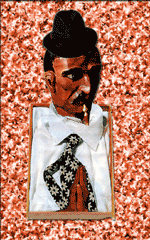

 |
Así lo califican los compañeros del centro asistencial donde trabaja como enlace sindical. Jose Mª de Los Acuerdos, que es el que más horas trabaja a su lado dice de él que: "... es un tío estupendo...Síempre tiene una frase amable para soltar y contínuamente está contando chístes y ocurrencias, y ademas cambia con frecuencia los ambientadores y es de los primeros en ofrecerse a ir al bar a por unos cafés o madalenas. A la hora de currar lo hace como el que mas y a pesar de llevarse trabajo a casa es capaz de echarte una mano con lo tuyo o de darte esas palmadas en la espalda que tanto nos reconfortan y que tantas toses desatascan." "Ha llegado a proponernos ir andando a Madrid para protestar por la congelación salarial y diversas peregrinaciones a Fátima y a Lourdes. Lo que más destacaría de él es su capacídad de trabajo. Sus jornadas son inacabables; a veces se pone el sol y lo pillas en su mesa haciendo números y pergreñando discursos.. .con su botella de Tio Pepe...es un fenómeno..." |